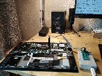
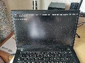
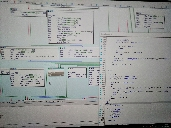
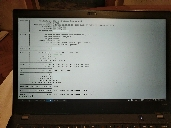

Убираем белый список на WWAN модемы для ThinkPad T480s
Неактуально, появился порт Libreboot
Ох уж эта сертификация на модемы, из-за которой можно установить модем только из небольшого списка одобренных. Чтобы убрать ограничение, нужно пропатчить биос. Есть неплохая статья, однако с ней у меня не вышло. Во-первых бесплатный инструмент Ghidra, рассматриваемый в статье, у меня падает при анализе модуля LenovoWmaPolicyDxe. Пришлось временно воспользоваться пиратской IDA Pro 😳 Кроме того, в статье много воды и лишних телодвижений. В частности, предлагается менять каждый if, делающий проверку на id модема, вместо того, чтобы просто перепрыгнуть подпрограмму, выводящую информационное сообщение и запускающую бесконечный цикл. Да, такой патч получается неуниверсальный, привязанный к конкретной версии, но элементарно создать аналогичный для любой другой версии прошивки.
   
{kind=link}
{kind=link}
{kind=link}
{kind=link}
Настройки WWAN модема Sierra EM7455
Включение эхо-режима
ATE1Прошивание модема
AT!ENTERCND="A710"
# Очистить все изменения и откатиться к заводским настройкам Lenovo/Sierra
AT!RMARESET=1
AT!IMAGE=0
AT!RESETqmi-firmware-update --reset -d "1199:9079"
qmi-firmware-update --update-download -d "1199:9079" SWI9X30C_02.33.03.00.cwe SWI9X30C_02.33.03.00_GENERIC_002.072_001.nvu
qmicli -d /dev/cdc-wdm0 --dms-set-firmware-preference=02.33.03.00,002.072_001,GENERICAT!ENTERCND="A710"
AT!USBVID=1199
AT!USBPID=9071,9070
AT!USBPRODUCT="EM7455"
AT!PRIID?
# Carrier PRI: 9999999_9904609_SWI9X30C_02.24.05.06_00_GENERIC_002.026_000
AT!PRIID="9904609","002.026","Generic-Laptop"
# Заставить модем работать в USB2 режиме для совместимости с современными M.2 интерфейсами
AT!USBSPEED=0
AT!RESETОтключение необходимости запуска скрипта по разблокировке модема
AT!OPENLOCK?
sierrakeygen.py -l <code> -d MDM9x30
AT!OPENLOCK="<newcode>"
AT!PCFCCAUTH=0
AT!RESET